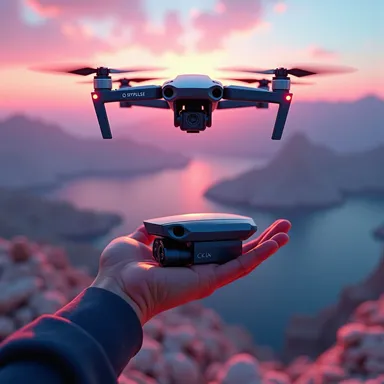
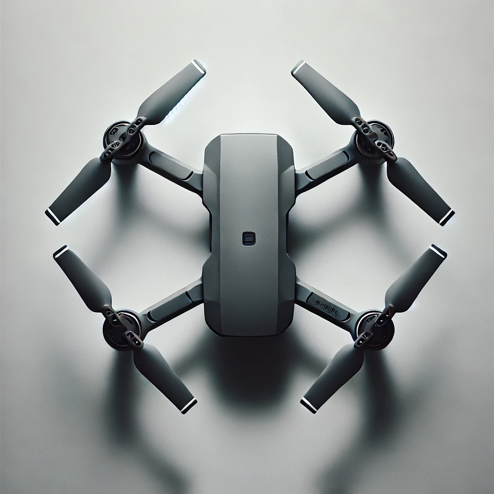
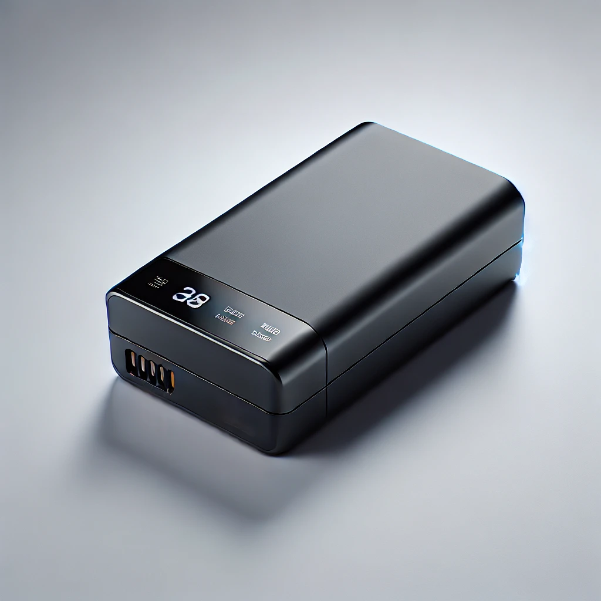

Fly Longer, Sense More Industry-Leading Performance
Introduce the SkyPulse Mini 3
An adventure-ready camera drone designed to be small and incredibly light is the SkyPulse mini 3.It has a longer battery life, 4K HDR video with tons of discounts, and entertaining features like True Vertical shooting for photos appropriate for social media.Whether documenting a thrilling road trip or a simple day spent in your backyard, Mini 3 is available right now.
Weight under 250g
Gps Navigation
Intutive Controller
Mechanical Shutter
4K HDR video Quality
Extended Battery Life
True Vertical Shooting
Icredible Drone Camera
4K Ultra HD Video Recording
Capture every moment in stunning detail with 4K Ultra HD resolution. Whether you're filming a breathtaking landscape or fast-paced action, the drone’s camera ensures crystal-clear, professional-grade video that impresses every time.
Advanced Gimbal Stabilization
Ensure smooth, stable footage even in challenging conditions. The advanced 3-axis gimbal stabilization system eliminates camera shake and vibrations, delivering blur-free videos and sharp photos, no matter how rough the flight.
High-Resolution Stills
Take your aerial photography to the next level with high-resolution stills up to 48MP. Every image is captured with incredible detail and vibrant color, making it perfect for creating stunning prints or sharing on social media.
Intelligent Shooting Modes
Unleash your creativity with intelligent shooting modes like Follow Me, Orbit, and Waypoint Navigation. These automated features make it easy to capture cinematic shots, allowing you to focus on the creative aspects while the drone handles the piloting.
Ergonomic Design
Experience comfortable and intuitive control with the remote's ergonomic design. The lightweight, well-balanced controller fits naturally in your hands, reducing fatigue during long flights and allowing for precise maneuvering.
Long-Range Connectivity
Maintain a strong and stable connection with your drone up to 10 kilometers away. The remote controller’s advanced transmission technology ensures low-latency, real-time video feed and responsive controls, even at extended distances.
Built-In Display
Stay fully informed with the remotes high-resolution built-in display, providing you with real-time flight data, camera view, and essential information at a glance. The bright screen ensures visibility even in direct sunlight, so you are always in control.
Customizable Controls
Tailor the remote to your flying style with customizable buttons and controls. Whether you prefer quick access to camera settings or flight modes, you can configure the controller to suit your preferences, giving you full command at your fingertips.
Extended Flight Time
Enjoy longer flights with the high-capacity battery, offering up to 35 minutes of continuous flight time on a single charge. Whether you're capturing extensive footage or exploring large areas, the extended battery life ensures you have the power to complete your mission.
Quick-Charge Technology
Get back in the air faster with quick-charge technology. The battery recharges to full capacity in under an hour, minimizing downtime and allowing you to continue capturing footage without lengthy delays.
Intelligent Battery Management
Stay informed with the intelligent battery management system, which continuously monitors power levels, temperature, and health. Real-time alerts and status updates help you optimize performance and prevent unexpected power loss during flights.
Lightweight and Compact
Designed for portability, the battery is lightweight and compact, making it easy to carry spares for extended missions. Its efficient design doesn’t compromise on power, ensuring that your drone remains agile and responsive in the air.



SkyPulse Mini 3 Drone
$499.99
In Stock.
Experience the ultimate in aerial photography with the SkyPulse Mini 3 Drone. Capture stunning 4K videos, enjoy extended flight times, and benefit from intelligent flight modes designed for both beginners and professionals.
4K Ultra HD Video Recording
Advanced Gimbal Stabilization
48MP High-Resolution Stills
35 Minutes Extended Flight Time
Useful Features
Create stunning time-lapse videos with Hyperlapse, transforming everyday scenes into cinematic experiences as your drone moves. Capture professional-grade shots effortlessly with Master Cinematic Shots, where the drone follows pre-set paths for breathtaking visuals. Highlight intricate details and dramatic moments with crystal-clear slow motion, perfect for creating visually captivating scenes.
Hyperlapse
Active Tracking
Slow Motion
Gallery
Explore the world from a new perspective with Sky Pulse. Our gallery showcases breathtaking aerial shots captured by our drones, highlighting the exceptional clarity, vibrant colors, and dynamic range that set Sky Pulse apart. From sweeping landscapes to intricate details, witness the capabilities of our drones through stunning images and videos that truly bring your adventures to life.